mj_step 产生——不改物体坐标、不 teleport、不焊接、不播放预录动画。
失败会如实记录原因，不伪造成功。接触力是仿真接触力（MuJoCo 接触求解器），不是真实触觉硬件数据。
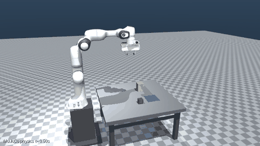
scripts/record_gif.py 在 mj_step 循环中逐帧抓取真实仿真画面生成
（440×248，143 帧，10 fps，画面左下角为仿真时间）。| 文件 | 作用 | 说明 |
|---|---|---|
run_simulation.cmd | 打开可视化窗口实时演示 | MuJoCo 官方被动查看器，画面与物理同步 |
run_experiment.cmd | 批量实验（5 种子 × 2 次） | 输出 CSV / JSONL / 图表，无窗口 |
run_tests.cmd | 自动化测试 | pytest 15 项，约 10 秒 |
README.html | 本图文说明 | 双击用浏览器打开 |
| 项 | 值 |
|---|---|
| 操作系统 | Windows 11 (26200) |
| Python | 3.11.9，独立虚拟环境 <项目根目录>\.venv |
| 物理引擎 | MuJoCo 3.2.2（锁定版本） |
| 依赖 | numpy 2.4.6 / scipy 1.17.1 / opencv-python 5.0.0 / matplotlib 3.11.2 / Pillow / pytest |
| 硬件 | i5-13490F / 15.8 GB RAM / GTX 1050 Ti 4 GB |
| 机器人模型 | MuJoCo Menagerie franka_emika_panda（原文件未修改，36.5 MB，逐文件 SHA1 校验） |
┌──────────────────────────────────────────────┐
中文指令 ───▶ │ task_planning/language.py 规则解析（非大模型）│
└───────────────┬──────────────────────────────┘
▼ TaskSpec(action / target / destination)
MuJoCo 场景 ──▶ RGB / Depth / 分割 ──▶ perception/vision.py ──▶ Detection[]
(mj_step) ├─▶ 关节 / 末端 / 夹爪 ──▶ proprioception.py ──┐
└─▶ 接触求解器 ──▶ contact.py ──┤
▼
scene_graph/graph.py 动态场景图
▼
multimodal_fusion/fusion.py 融合快照
▼
task_planning/planner.py 符号规划
▼
task_planning/skills.py 技能库
▼
feedback/executor.py 执行 + 重试
▼
evaluation/metrics.py 指标落盘cam_rgb（斜前方 1280×720）、cam_depth（RGB-D 感知）、cam_side（侧视取证）。scenes/robot/panda_robot.xml 由 scripts/build_robot_include.py 生成，相对官方 panda.xml 只有两处差异：
删除 9 维 keyframe（场景 nq=23），link0 加 pos="0 0 0.42"。gripper_left/right（kp=500, kv=15, ctrl∈[0,0.04] m）；官方 actuator8 ctrl 恒置 0。| 项目 | 做法 | 实测 |
|---|---|---|
| 逆解 | 阻尼最小二乘，在 scratch 数据上求解，不回写 qpos | 收敛 0.05 mm |
| 伺服 | 每物理步 IK → 限速 ≤0.6 rad/step → 写 ctrl → mj_step，含位置/姿态外环积分 | 稳态误差 ≈2 mm |
| 直线运动 | 路径切 10 mm 小段，逐段闭环 | — |
| 夹爪闭合 | 扫到首次接触 → 每步多收 0.02 mm 直到两侧指面都接触（或 8 N）→ 保持 150 步 | 两侧接触力 1.25 N / 5.66 N |
| 通道 | 实现 | 说明 |
|---|---|---|
| RGB-D | MuJoCo 离屏渲染，深度为沿光轴 z 深度 | 反投影已按 x 右 / y 上 / 视线 −z 对齐 |
| 语义分割 | enable_segmentation_rendering() | 仅用于取物体像素区域 |
| 颜色 | mask 内 HSV 中位色相 → 规则颜色词 | 规则判定，无深度学习模型 |
| 类别 | 点云外接盒尺寸比例 → cube / box / region | 规则判定 |
| 本体感知 | qpos / qvel / actuator_force / hand 位姿 | 传感器真值 |
| 接触力 | mj_contactForce 逐接触点 | 仿真接触力，非真实触觉硬件（JSON 中 source 字段写明） |
检测精度（与 MuJoCo 真值比较，仅用于评估）：红色方块 0.69 mm，蓝色目标区 0.56 mm，黄色障碍物 0.92 mm。 候选物体先验：只检测「有自由关节的刚体」+「语义表登记的放置区域」，静态家具不进入物体列表。
节点 = 物体/区域（位姿、尺寸、类别、颜色、可抓取性、状态 free/held/placed/lost）； 边 = near / above / below / left_of / right_of / on；每次变更有历史记录可回溯。
时空对齐误差直接计算并记录（不插值假装对齐）；规则融合输出 free / in_hand / placed / uncertain； 带冲突检测（如「图说持有但接触力为 0」）。
rule-based-zh-v1：正则 + 词典。llm=false，没有大模型、没有权重、没有 API 调用。
符号规划 + 前置条件检查 + 技能序列；抓取失败会重新感知并换 90° 朝向重试，
超限则返回 failure_node 与原因。
配置：--seeds 1 2 3 4 5 --trials 2，物体与目标初始位置各 ±15 mm 随机，方块偏航 0~90°。
| 指标 | 结果 |
|---|---|
| 成功率 | 10 / 10 = 100 % |
| 平均任务时长 | 12.10 s（标准差 0.47 s） |
| 平均 TCP 路程 | 2.245 m |
| 夹持力峰值 / 均值 | 33.05 N / 13.34 N（MuJoCo 接触求解器） |
| 障碍物碰撞事件 | 0 |
| 指腹蹭台面事件 | 2（单独统计，不计为碰撞） |
| 重试次数 | 0 |
| 放置水平误差 | 平均 8.70 mm，最大 15.80 mm |
| 放置高度误差 | 3.4 ~ 11.5 mm（方块落在台面上，目标区为 2.4 mm 厚无碰撞标记） |
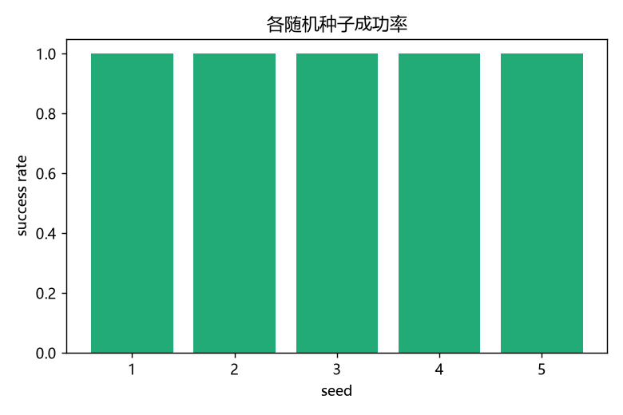
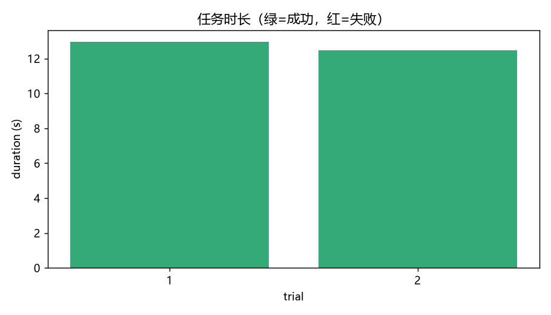
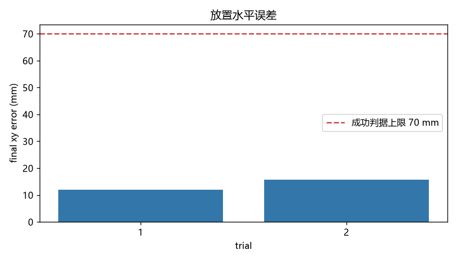
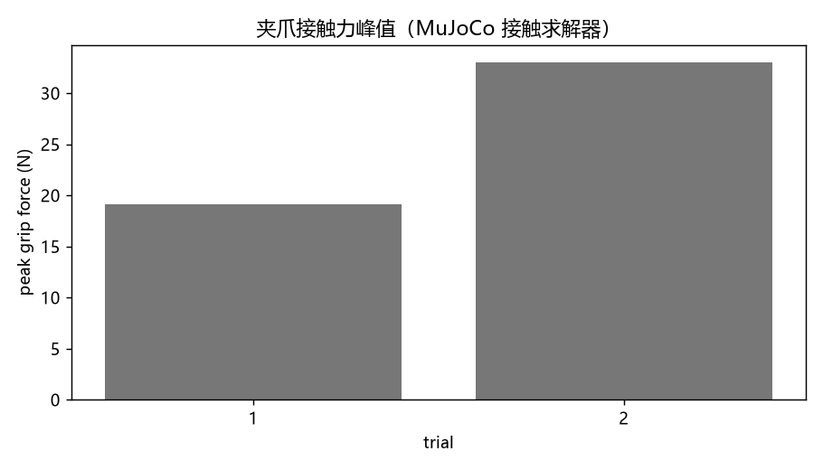
原始数据：results/experiment.csv、results/summary.csv、results/experiment.jsonl、
results/experiments/<run_id>/trial_*.json（含规划、场景图、融合快照、校验详情）。
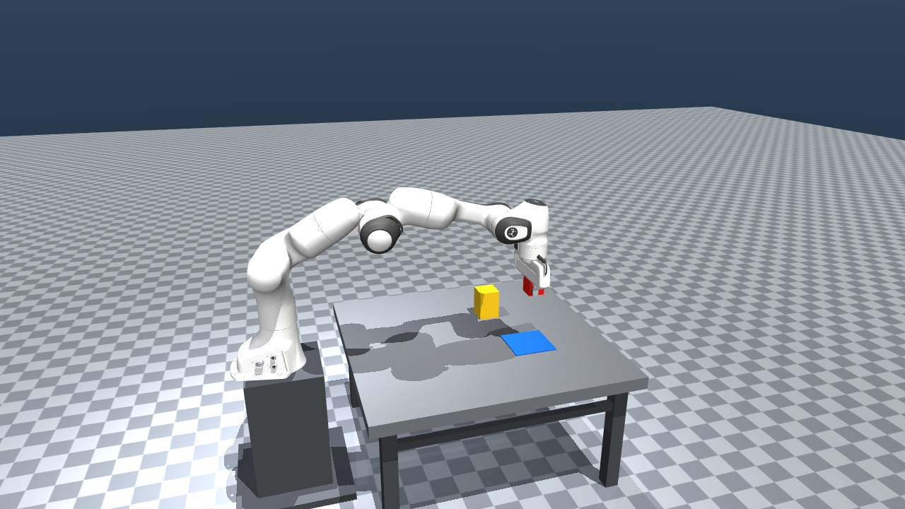
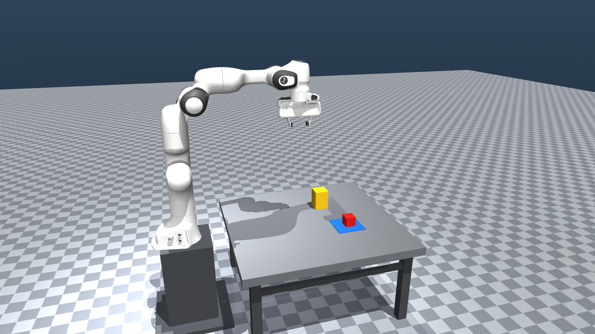
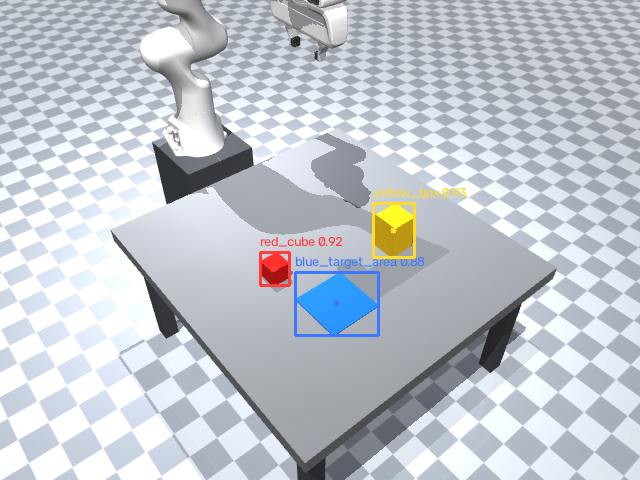
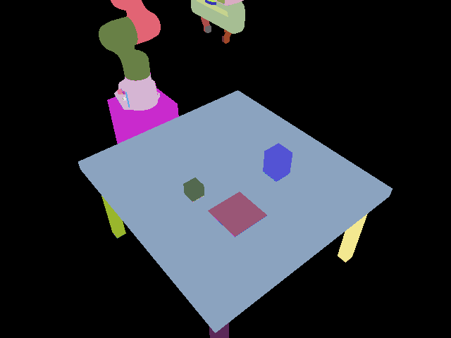
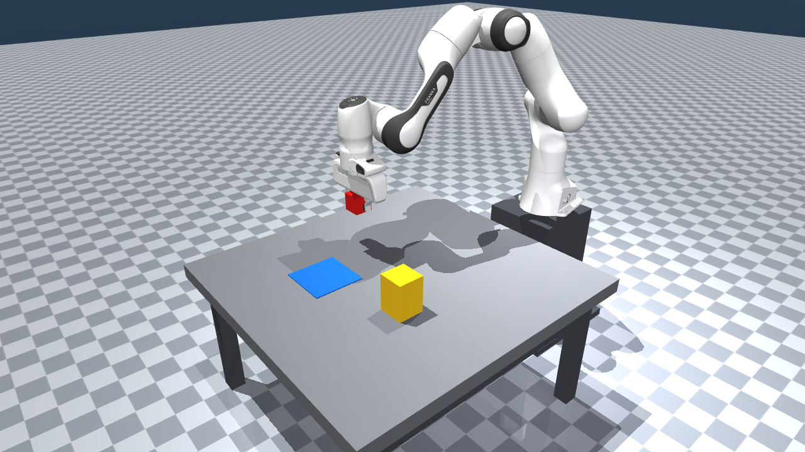
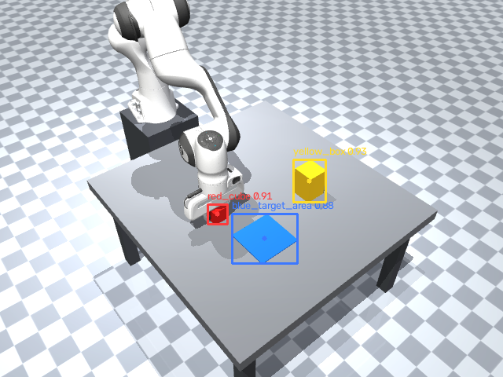
rule-based-zh-v1，明确 llm=false）。failure_node + 抓取链换位姿重试。mj_step 抓帧）。.cmd 入口。NeuralPlannerBackend / FusionBackend：只有接口与文档，调用抛 NotImplementedError。import mujoco 报
OSError: [WinError 1114] 动态链接库(DLL)初始化例程失败。encoding='utf-8' 读写文本；运行前设置 PYTHONIOENCODING=utf-8。$env:PYTHONIOENCODING="utf-8"
$PY = ".\.venv\Scripts\python.exe"
$R = "."
& $PY "$R\scripts\viewer_demo.py" # 可视化实时演示
& $PY "$R\scripts\run_instruction.py" # 指令驱动全链路
& $PY "$R\scripts\run_instruction.py" --instruction "把绿色方块放到蓝色目标区域。" # 期望 exit=1, failure_node=resolve_target
& $PY "$R\scripts\run_instruction.py" --instruction "抓起红色方块。" # 只抓取，保持夹持
& $PY "$R\scripts\run_grasp.py" # 固定抓取-放置 + 截图
& $PY "$R\scripts\test_motion.py" # 运动控制验证
& $PY "$R\scripts\test_perception.py" # 感知验证
& $PY "$R\scripts\run_experiment.py" --seeds 1 2 3 4 5 --trials 2
& $PY "$R\scripts\record_gif.py" --every 50 --gif-width 440 --colors 64 --mp4
& $PY -m pytest "$R\tests" -q